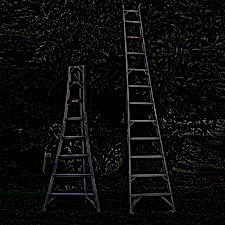

Part 1: Fun with Filters!
1.1: Finite Difference Operator
We can get the edges of an image by using convolving an image with the finite difference
operators Dx = np.array([[1, -1]]) and Dy = np.array([[1], [-1]]).
By convolving the image with Dx, we see the vertical edges of the image, and by convolving the
image with Dy, we see the horizontal edges of the images. To see the full edges of the image, we
can calculate the gradient magnitude of the image: np.sqrt(x_gradient ** 2 + y_gradient ** 2).
In order to see the edges better, I binarized the image by setting all pixels > a certain threshold
to white and the rest of the pixels to black.
Looking at the different thresholds, I think .25 was the best threshold, as you can see most of the edges
clearly while still getting rid of most of the other details:

1.2: Finite Difference Operator
The edge image above, however, is noisy. The edges look jagged rather than smooth and there seems to be some gaps in between the same edge.
To fix this, we can blur the image first by convolving it with a 2D gaussian. I used a kernel size of 6 and a sigma of 1. After that, I
found the vertical and horizontal edges and the gradient magnitude of this smoothed image by using the same method as 1.1.
Rather than smoothing the image first, we can get the same result by taking the derivatives of the 2D gaussian. We find
dx of the gaussian by convolving it with the finite operator Dx and we find dy of the gaussian by convolving it with Dy.
We then find the smoothed vertical edges by convolving the image with dx of the gaussian and the smoothed horizontal edges by convolving the image with dy of the gaussian. To find
the gradient magnitude, we just apply the same equation as part 1.1, but just using the smoothed gradients. Because I kept
the kernel size as 6 and sigma as 1, the edge image produced this way looks very similar as the one before.
After binarizing (with a threshold of .1):

Smoothing the image first and then convolving with the finite difference operators.
Taking derivatives of gradients first and then convolving with the image.
Compared with the non-smoothed version in part 1.1, these edges are both thicker and less "pixelated". The edges just look more
connected and clean.
Part 2: Fun with Frequencies!
2.1: Image "Sharpening"
As we saw in part 1, is if we convolve the 2D Gaussian with an image, it smoothes out the image. This is because a Gaussian acts like a
low pass filter: when convolved with an image, the image's high frequencies will be filtered out, so the resulting image will be blurred.
In order to "sharpen" an image, we can get the high frequencies of image (original image - blurred image) and add some of it back to the
original image. Thus, more of the high frequencies of the image will be seen and the image will look sharper. The equation is:
sharpened image = image + alpha * (image - blurred image),
where alpha is how much of the high frequency image we add in.

Original image of the Taj Mahal.

Sharpened image of the Taj Mahal.
Additionally, rather than having to subtract the blurry image from the original image and then adding that to the original image,
we can combine this into a single convolution operation by using the unsharp mask filter. The unsharp mask filter is just
(1 + alpha)*unit_impulse - alpha * 2D gaussian, which we then convolve with the image we want to sharpen. This is mathmatically
equivalent to the sharpening technique described above, so the results look the same.
Original image of the Taj Mahal.
Sharpened image of the Taj Mahal by convolving it with the Unsharp Mask Filter.
I then tried sharpening a blurry cat image. This one didn't work too well since the image was so blurry
even the high frequency parts of the image was blurry.
Sharpened cat image (alpha=1, kernel_size=15)
High frequency cat image.
After that, I tried sharpening a blurry photo of some ladders because it has more edges, so I thought there would be
more to sharpen in the image.
Sharpened ladder image (alpha=.7, kernel_size=10)

High frequency ladder image.
Finally, I tried taking a very clear photo, blurring it using a 2D gaussian, and then sharpening it again:
Original sharp nature image
Blurred nature image (kernel_size=10)
High frequency nature image
Sharpened nature image (alpha=1, kernel_size=20)
After blurring, many of the fine details from the image were lost. These details could not be regained after sharpening,
so the sharpened image still looks much blurrier and less *crisp* than the original.
2.2: Hybrid Images
Hybrid images can be created by combing a high frequency image with a low frequency image. From up close, the high frequency
image will be clear, and from far away, the low frequency image will be clear.
To do this, we align the two images, apply a high pass filter on the image we want to see up close and a low pass filter for the image we
want to see from far away, and then average the two images together. I chose a sigma value for the Gaussian filters that were used for the
LP and HP filters, and the corresponding kernel size would be sigma * 6.
Using this, we can create a puppy bagel!
To get a better understanding of this process, we can look at the frequencies of the images in the Fourier space. As we can see from the plot,
the puppy had a higher frequency than the bagel even before applying the HP and LP filters. This makes sense because the puppy has more details
than the bagel, and thus would be easier to see from up close and harder to see from far away anyways.
A few more hybrid images:
One dollar (how much money I really have)
One hundred dollars (how much I wish I have)
The one dollar from up close and a hundred dollars from away ended up being a fail. No matter how much I toggled the sigma
values, you can always see Ben Franklin pretty clearly from up close and the details of the one dollar from far away. This is likely
due to the fact that the bills are so different in size and shape so they didn't line up well. I also couldn't really make either image fainter
so that they would be harder to see from up close/far away, since I would lose too much of the photo and then the numbers on the bills would be
unreadable.
Multi-resolution Blending
2.3 Gaussian and Laplacian Stacks
In order to blend together two images seemlessly and natually, we have to blend the images at different frequencies. To do this, we first must
create Gaussian and Laplacian stacks of the images. To create the Gaussian stack, at each level i, I applied the 2D Gaussian filter on the previous
level i-1 to get a blurrier image. To create the Laplacian stack, at each level i, I substracted level i + 1 of the Gaussian stack from level i of
the Gaussian stack: laplacian_i = gaussian[:, :, :, i+1] - gaussian[:, :, :, i]. The final layer of the Laplacian stack is just the final layer of the
Gaussian stack because there is no next-Gaussian layer to subtract from it.
For example, here is the Gaussian and Laplacian stacks for an orange and for an apple:
Multi-Resolution Blending
Now that we can the laplacian stacks of the two images, we can blend them together using a binary mask! To do this, we can
create a gaussian stack of the mask and then add it to the laplacian masks of the two images we want to blend. The equation would then be
blended_level_i = gaussian_mask_i * im1_laplacian_i + (1-gaussian_mask_i * im2_laplacian_i).
Im1 would be the white part of the mask and Im2 would be the black part of the mask.
Note: I chose a kernel_size for each Gaussian filter used to create a Gaussian stack, and the corresponding sigma would be 6 * kernel_size.
Here are the results for the "oraple" blended together with a vertical black and white mask.
This can also be done for irregular masks! Like what if a raccoon really wanted sabrina carpenter's hair:
A few more examples:
Miffy blending in with real rabbits:
A hand with a mouth, ready to eat some fingers. (this one didn't work too well, likely because the mouth had a white background so it blended strangely)